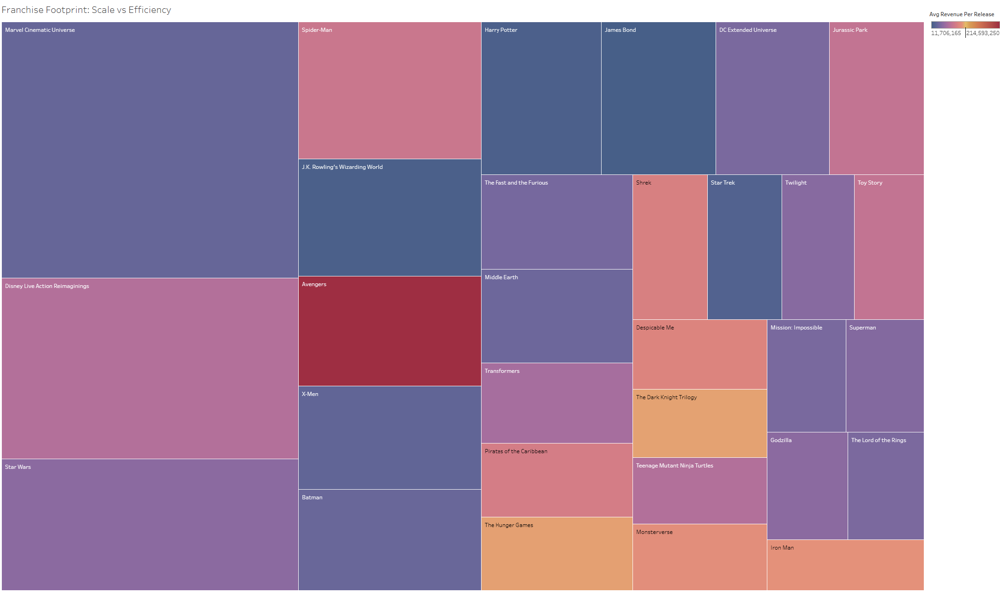

👋 Welcome to Kevin Mayo's Portfolio
I'm a detail-oriented data analyst and supply chain problem-solver with creative instincts. From Tableau dashboards to Python analysis, I bridge operational precision with strategic insights.
📁 Featured Projects
- 📺 TV Series Dashboard – Explore on Tableau Public
- 📺 TV Series Analysis (Python) – View Kaggle Notebook
📊 Featured Dashboards

Genre Impact Map – Heat and halo scores across cinematic styles

Franchise Footprint – Scale vs efficiency across blockbuster IPs

Box Office Timeline – 90+ years of growth, disruption, and recovery
🎓 Certifications
- IBM Data Analyst Professional Certificate
- Google Data Analytics Professional Certificate
- Oracle Cloud Infrastructure AI Foundations Associate